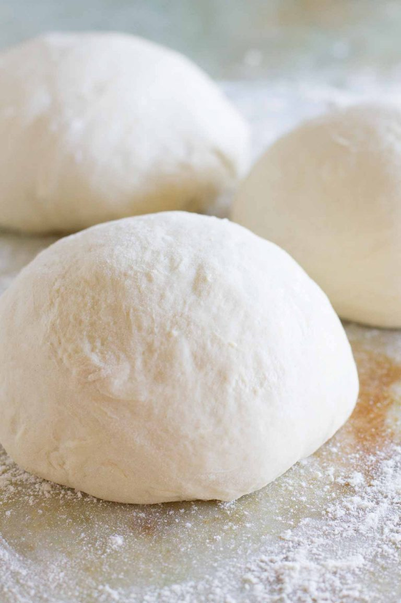

Pizza Dough

Description
For this recipe, there is no rising involved!
This is a 30 minute dough, that requires a higher
amount of yeast, and eliminates the rising process
altogether. You can allow the dough to rest, in a
large bowl for 30 minutes if you prefer though.
This dough is able to be frozen for up to three months.
Wrap your ball of dough in plastic wrap and place into a
freezer safe bag, and seal, squeezing out all of the air.
Thaw dough in the refrigerator overnight (8-10 hours) before
using.
Ingredients
- 1 Tablespoon Yeast
- 1 Cup Warm Water
- 1/2 Teaspoon Granulated Sugar
- 1 Tablespoon Olive Oil
- 1 Teaspoon Salt
- 2 1/2 - 3 Cups All Purpose Flour
Steps
-
Preheat oven to 450 degrees.
-
In a large bowl, or bowl of stand mixer, stir the yeast and sugar into the warm water until completely dissolved. Allow mixture to sit and proof for 10 minutes, until foamy.
-
Add the salt and olive oil to the yeast mixture. Begin adding the flour 1/2 cup at a time, stirring (with a large spoon or hook attachment if using stand mixer) after each addition.
-
When the dough has pulled away from the sides of the bowl and is no longer sticky, knead the dough for 3 minutes in the bowl or on a well floured surface. You can also knead with the dough hook attachment on medium speed for 3 minutes.
-
Roll or pat the dough out on a well floured surface, into a large circle about 1/4 - 1/2 inch thick, and place on oiled pizza pan.